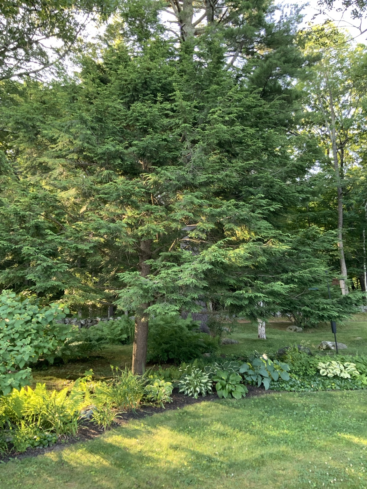

Light
Part shade to shade
Tsuga canadensis · Likely identification


A mature shade-tolerant evergreen with fine, layered branches.
Part shade to shade
Keep roots cool and evenly moist
Moist, well-drained, acidic soil
Leaf mold or compost in spring if needed
Light shaping in late winter or early spring; remove dead wood anytime.
Hemlock woolly adelgid, mites, drought stress